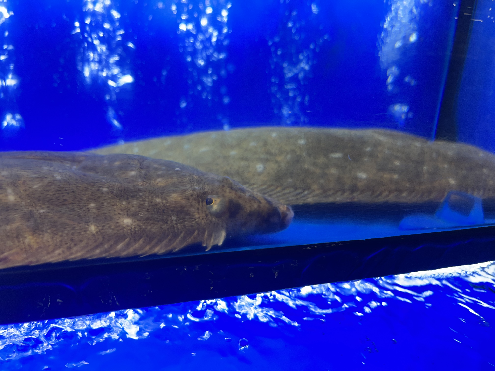
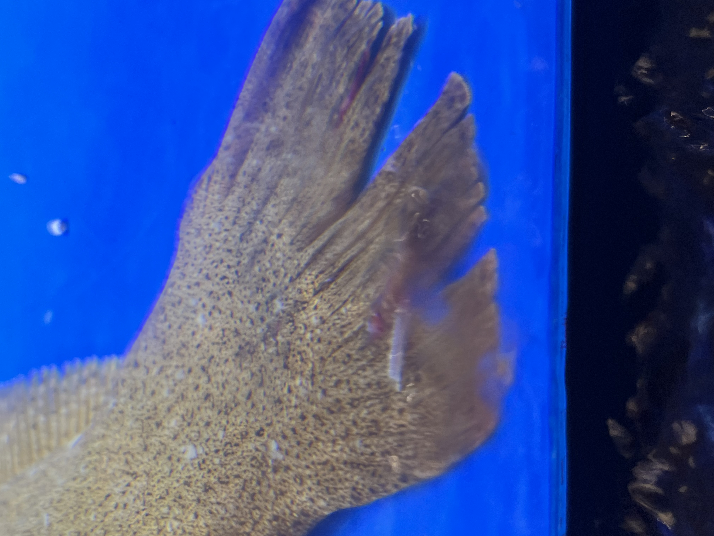
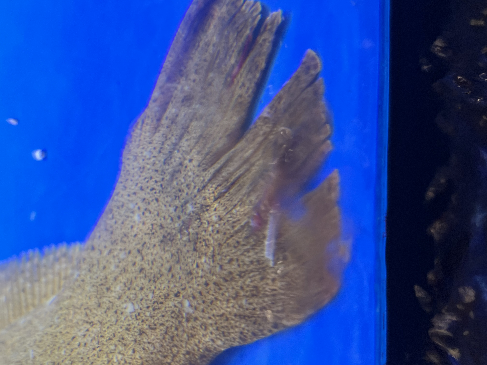

there's an aquarium i go to buy my food
it stands out from the tesseation of homogeneous big box stores
it is a simple pleasure to meander the isles
compared to the unwalkable streets and unremarkable light-industry
its species richness is uncomputable realtive to the surroundant where the only ambulating animal life is carseat leather
in its tanks are creachers from the benthic, the shoals, under rocks, and from schools
it smells like an oldtimey dock far away from shore
theres a troup of hard working people behind the counter happy to help
it's fun to look at their scales, shales, shells, barbels, stalks, flecks, whiskers, and lateral lines
they are made of math and infinite wonder
when i divorce myself from reality its a beautiful escape
the whole store is stocked fresh and bountiful and i allow myself to marvel and to be enchanted by the beautiful creachers
it is a beautiful escape
only,
it is not that
it is very different
the creachers there are aerated and condemned
each tanks life support system exists to support death
the creachers are sensative
staring out into florescence, acoustomed to near darkness
creachers with ears that line the entierty of their bodies
with apendages sufficient to navigate craggy total darkness
are stuffed into boxes with ceasless unsteady pounding aeration
they are sensitive
and arrive dammaged from rough handling
they too are killers, eat and be eaten where they are from
but it makes little difference
why must the only reprieve be of cruel nature
my heart returns to the crack in the sidewalk collecting cigarette dust


 
